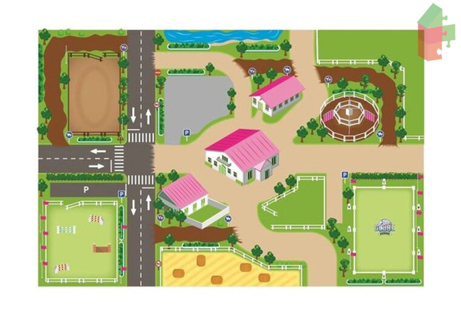

Welcome
Welcome to the lands of the Iridyon horses. Take your time to view the pages :)
Hello
FAQAdopt
Custom
MYO
Obtaining an Iridyon horse
Map
Shop
??Corrupted??
Rarity traits
Mutations not breedable
Zoek de klikbare bak! oefening clickbare maps 